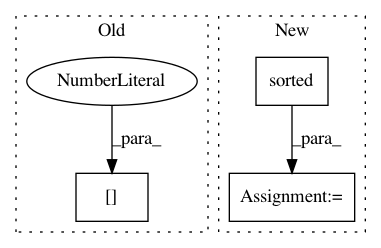

e3d1e6dfd06c35dec767c53b930fa69fc2ff7b12,ludwig/utils/visualization_utils.py,,hyperopt_pair_plot,#Any#Any#Any#,1292
Before Change
// )
plt.hist2d(
hyperopt_results_df[score_name][param_pair[0]],
hyperopt_results_df[score_name][param_pair[1]],
bins=30,
cmap="Blues"
After Change
score_name,
filename
):
params = sorted(list(hyperopt_results_df.keys()))
params.remove(score_name)
num_param = len(params)
sns.set_style("white")
fig = plt.figure(figsize=(20, 20))
gs = fig.add_gridspec(num_param, num_param)
for i, param1 in enumerate(params):
for j, param2 in enumerate(params):
if i != j:
In pattern: SUPERPATTERN
Frequency: 3
Non-data size: 3
Instances
Project Name: uber/ludwig
Commit Name: e3d1e6dfd06c35dec767c53b930fa69fc2ff7b12
Time: 2020-04-14
Author: w4nderlust@gmail.com
File Name: ludwig/utils/visualization_utils.py
Class Name:
Method Name: hyperopt_pair_plot
Project Name: OpenNMT/OpenNMT-py
Commit Name: 685126644ae540be72eb662527269a0395e2c9eb
Time: 2017-09-05
Author: bpeters@coli.uni-saarland.de
File Name: onmt/IO.py
Class Name:
Method Name: make_features
Project Name: deepmipt/DeepPavlov
Commit Name: 1479b9c5a7a235fd27489b09be6dd208eed0e9c9
Time: 2018-11-22
Author: ol.gure@gmail.com
File Name: deeppavlov/models/doc_retrieval/logit_ranker.py
Class Name: LogitRanker
Method Name: __call__